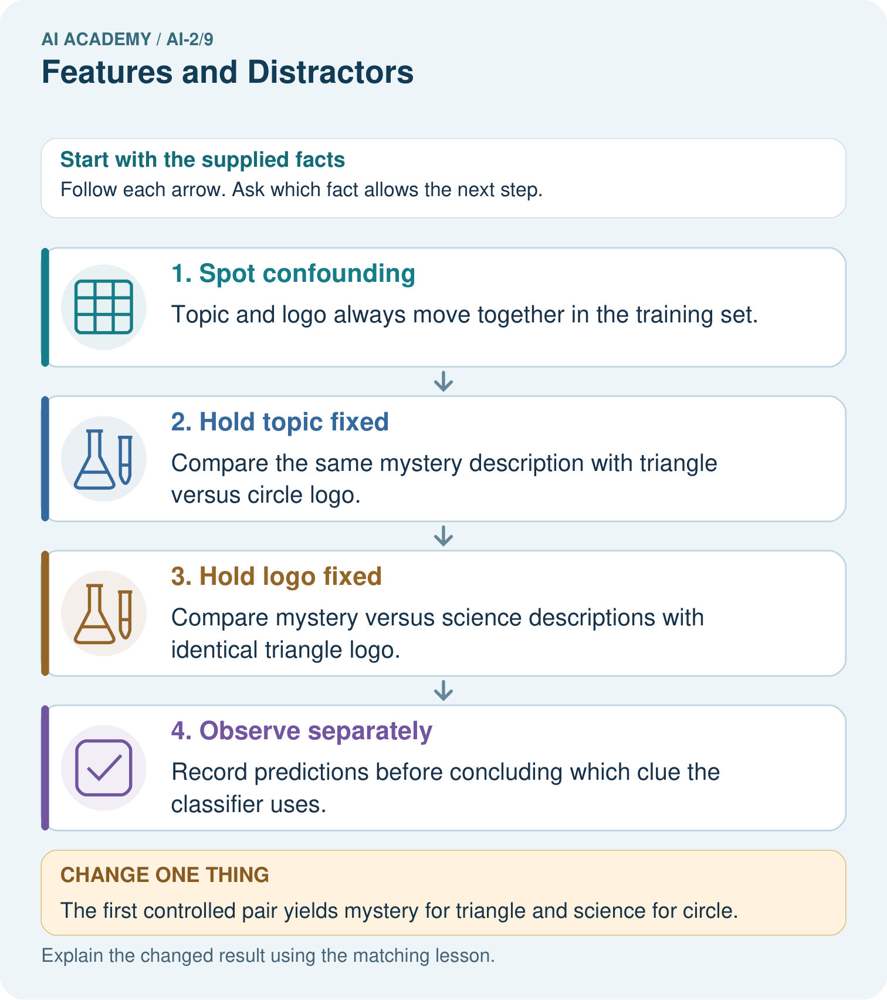

AI Academy · Level 2 · Grade 7 · Week 9 · Teacher guide
Features and Distractors
Learn to understand, design, build, test and explain AI systems responsibly.
Project: Transparent Book Recommender
Teacher guide · 1 of 7
Features and Distractors
Teach the learning cycle
Primary target: Choose recorded properties that preserve distinctions needed for a stated task
| Session | Sequence and minutes | Resources |
|---|---|---|
| Session 1 · Understand · 45 min | 0–7: recall and prerequisite; 7–15: inspect the concrete case and predict; 15–30: teacher models the worked trace; 30–40: learners explain a step using the text and visual; 40–45: check the core idea. | Sections 1–6; record the brief recall in the workbook. |
| Session 2 · Practise · 45 min | 0–5: retrieve the procedure; 5–15: W2 completion practice; 15–23: explain and check with a partner; 23–30: each learner answers the misconception check; 30–40: targeted reteaching or a harder variation; 40–45: prepare the investigation. | Sections 7–10; use the matching workbook W2 and misconception check. |
| Session 3 · Investigate and transfer · 45 min | 0–5: retrieve the decision rule; 5–20: investigate or trace; 20–30: start the independent case; 30–38: connect the project; 38–43: act on feedback; 43–45: plan the return check. | Sections 9 and 11–14. Give extra time to finish the full task set; use Section 15 when the week includes a coding lab. |
This is a starting allocation of 135 minutes, not a validated duration. Preserve all named topics. Schedule extra time for connected examples, the full investigation, independent cases and project building. Repeated copies of a case share one recorded attempt; they are not new evidence.
Case exposure check: this source example appears in ai-1/8, ai-2/9. Reuse a familiar case for recall or modelling; verify that the case used to assess transfer has not already received feedback.
Retrieval answer guidance
Operational Labels
Without opening the old lesson, explain one key idea from Operational Labels. Give an example and a mistake that the idea helps you avoid.
Look for: Apply a category definition using explicit evidence and boundary rules
Reference example, not the only acceptable wording: In order: ready because both known fields pass; revise because 31 exceeds 30; review because the known day passes but the room is unknown; revise because the known day failure has priority over the unknown room. Equality at 30 is accepted.
Debugging Strategies
Without opening the old lesson, explain one key idea from Debugging Strategies. Give an example and a mistake that the idea helps you avoid.
Look for: Design revealing tests for a function
Reference example, not the only acceptable wording: 4, 0 and 6.
Branching Logic
Without opening the old lesson, explain one key idea from Branching Logic. Give an example and a mistake that the idea helps you avoid.
Look for: Trace the selected branch in an if elif else chain
Reference example, not the only acceptable wording: if tests negative first; elif checks <= 12 only after that fails; else handles the rest. Unindented print runs after any selected branch, whose assignment gives label a value.
Use the student module and workbook section with this exact week title. The worked case, independent question and answers below form one aligned lesson sequence.
What the learner must demonstrate
All animal books in training have green covers. How could you test whether a recommender is using subject or cover colour? Supply two diagnostic test descriptions.
Concept to explain
A feature should help the task and be available at decision time.
| Term | Meaning |
|---|---|
| feature | An input attribute or representation used by a model or decision rule. |
| relevant | Useful to the particular question, target or decision being considered. |
| distractor | A detail that draws attention but does not help answer the current question. |
| shortcut | A convenient but unreliable cue used instead of the relationship the task requires. |
Prepare the class
Use the supplied scenario, student illustrations and blank paper. For numeric work, offer counters or a calculator after learners show the setup. Fictional records are supplied; personal data and paid accounts are unnecessary.
Allow 80 minutes: recall 8; explanation 12; worked demonstration 15; guided practice 20; independent assessment 15; project and reflection 10. Extend the lab into a second session when needed.
Preparation for the connected explanation
Students investigate representation before fitting a model. Keep the paper rule explicit: positive known measurements, fixed orientation, no thickness in the card task, and both boundaries inclusive. Length and width suffice for that limited rule. A collision between feature records with different correct labels demonstrates lost information; it does not prove that every task needs these same inputs. Explain leakage through timing and the copied sticker, without requiring model training or statistics.
Readiness answer
Check the card fields against the same explicit policy and version. Agreement alone can preserve a shared mistake; it does not prove that an event exists or has permission.
Four cards matching the worked table, with dimensions, colour and identifying letters written as text
Two paper columns headed Before the decision and After inspection, plus removable label stickers
Blank records headed Length in cm and Width in cm, and the independent display-tray task from W4
End goal for the pictorial case
By the end, I can test a distracting feature with controlled changes rather than confounding clues.
This added worked case illustrates the week’s main idea. Retain all original and connected topics; schedule its practice within the teaching cycle.
Teacher guide · 2 of 7
Explain the mechanism
Explain the mechanism
Input → Process → Output
Trace the information. At each stage, ask what changed and how you could test it.
Which stage could fail even when the other two are correct? Explain:
Predict first. Then check each step. A correct answer without visible reasoning is incomplete evidence.
1. Goal: recommend enjoyable readable books.
2. Useful: genre match, reading level, length preference.
3. Distractor: cover color may match past labels by accident.
4. Deployment check: every chosen feature must exist before recommending.
Recalculate, retrace, or restate the reasoning in your own representation:
CHECK Did the evidence answer the exact question? Did the total, path, or source record stay consistent?
Concrete teaching case
Target: includes animal characters. Fields: animal tag, cover colour and shelf number.
Choose useful evidence and possible distractions.
Exact explanation to model
An accurate animal tag directly addresses the target. Colour and shelf can produce accidental shortcuts. Test on new books.
Explain the added worked example
Imagine a paper sorting task for a model delivery station. Each rectangular card has a length, width, colour and card number. The station labels a card fits if its length is at most 12 centimetres and its width is at most 8 centimetres. Both limits include equality. Cards stay flat in the marked orientation; turning, bending and thickness are outside this paper task. All measurements in the first examples are known positive whole numbers.
A feature is a recorded input property, such as width in centimetres. The target label is the answer we want to produce: fits or too large under this guide. Decide what the answer means before choosing the inputs. A card number can help us find a record, but knowing its number does not tell us its dimensions.
This guide already gives us a direct rule, so we do not need to train a model to solve it. We use the task to investigate the information that either a rule or a learned model would need. Later, when relationships are learned from examples, the same question remains: did we supply the distinctions the task requires?
Card A is 10 centimetres long and 7 centimetres wide. Card B is 10 centimetres long and 9 centimetres wide. A fits; B is too large because its width exceeds 8. Compare two ways of recording these cards.
A system receiving only the length cannot use the hidden width to tell these two cards apart. The same input, 10, is paired with two different correct answers. It may guess, return an uncertainty, or use a usual answer, but length alone cannot guarantee the right label for both. A more complicated model cannot reconstruct this missing distinction with certainty from that input alone.
A feature record needs a consistent order and units. Here we write length in centimetres first, then width in centimetres. The record 10, 7 means something different if someone silently switches the order or records millimetres. Write the definitions alongside the data.
Key terms
| Term | Meaning |
|---|---|
| Feature | A recorded property supplied as an input to a system |
| Target label | The answer a supervised learning task asks a model to predict |
| Feature record | The selected input values for one example, in a defined order |
| Relevant feature | An input property that helps make distinctions needed for the stated task |
| Leakage | Information used during development that would not legitimately be available when making the intended prediction |
Model the reasoning aloud
Use the complete worked example below before asking learners to complete W2. Reveal a small part, invite a prediction, then explain the deciding step. These teacher notes contain solutions; do not reveal the independent case answer during modelling.
| 10 by 7 cm and blue | Fits | Compare with the next card |
|---|---|---|
| 10 by 9 cm and blue | Too large | Same length and colour but width changes the label |
| 13 by 7 cm and blue | Too large | Same width and colour as the first card but length changes the label |
| 10 by 7 cm and red | Fits | Changing only colour does not change this guide |
The first two cards show why width matters. The first and third show why length matters. The first and fourth show that colour has no part in this particular rule. That is a statement about our task, not a claim that colour is useless for every task. For sorting red and blue cards, colour would be essential.
Suppose every fitting card in a small practice set is blue and every oversized card is red. Colour would appear to predict the labels perfectly in that set. A red 10 by 7 card and a blue 13 by 7 card expose the shortcut. Check a proposed feature on deliberately different cases before trusting the practice score.
| Thinking move | Teacher prompt |
|---|---|
| Plan | What is given? What is the question? Which procedure fits these facts? |
| Do | Point to each input and intermediate step in the worked trace. Name the rule that allows the next step. |
| Check | Does the output answer the question? Which assumption or limitation prevents a larger claim? |
Use the diagram and verbal explanation together. Ask learners to match a sentence to a specific visual step; do not assign learners fixed visual or auditory learning styles.
A pictorial worked case: Features and Distractors
A fictional book-topic classifier sees mystery books with triangular logos and science books with circular logos.
The facts we will use
Training contains no mystery-circle or science-triangle covers.
Goal is to identify topic from actual subject information, not publisher logo. New controlled test outputs have not been supplied.

Read the picture one step at a time
Why this result follows
Either subject information or logo could explain success on the old combinations. Controlled pairs separate their predictions by changing one aspect at a time. Designing the pair is not equivalent to observing the model’s response. Keep the descriptions identical when testing logo so differences do not have two possible causes.
What this example does not establish
Controlled observations support specific sensitivity claims; they do not reveal every internal feature a learned model uses.
Change one thing in the pictured case
Change: The first controlled pair yields mystery for triangle and science for circle.
Prediction: That pair is evidence of unwanted logo sensitivity.
Reason: The subject description stayed mystery; only the irrelevant logo changed.
Ask while showing the picture
Cover the result. Ask learners to name the inputs and predict the next step. Uncover one step, connect the icon to the actual procedure, and explain its evidence. Then change the supplied condition and compare. The picture is a representation; it does not document execution of a real AI model.
Teacher guide · 3 of 7
Demonstrate and guide practice
Demonstrate and guide practice
Board sequence
Write the given facts: Target: includes animal characters. Fields: animal tag, cover colour and shelf number.
Write the question to explain: Choose useful evidence and possible distractions.
Reveal after predictions: An accurate animal tag directly addresses the target. Colour and shelf can produce accidental shortcuts. Test on new books.
Keep for an independent attempt: Predict whether a book is short using page count and cover colour. Which feature directly supports the defined label? Give a counterexample to colour.
Classroom dialogue
Ask: Which facts are given, and which would we have to assume? Learners mark relevant details before discussing answers.
Say: Predict first. Show the rule, information path or calculation that would produce the result. A correct guess is not yet an explanation.
Reveal reasoning one step at a time. Explain why a tempting alternative fails. Write units and denominators for arithmetic, trace conditions for decisions, and identify supporting sources for claims.
In pairs, one learner solves while the other checks evidence; exchange roles. Remove the worked answer before independent assessment.
Model these guided questions
Length 12 cm is usable before inspection and passes its criterion. The unreadable width remains unknown, so it might be at most 8 or above 8; the available measurements do not establish fits or too large. The final sticker does not exist before inspection, so it cannot supply an input at the time the answer is needed. Using it would leak the later answer. The exit answer may use red 10 by 7 cm, which fits, or blue 13 by 7 cm, which is too large. Check the dimensions and use new cases that break the practice colour pattern.
Case-specific teaching sequence
| Stage | Teacher action |
|---|---|
| Session 1 start 0 to 7 minutes | Retrieve Week 7: agreement is not proof of a correct label. State the new target and check both inclusive boundaries. |
| 7 to 20 minutes | Show cards A and B. Cover their widths and identifying letters. Ask what identical length-only inputs allow the system to distinguish, then reveal width. |
| 20 to 33 minutes | Trace the four-row comparison table. Have students cite the pair showing each measurement matters and the pair showing colour does not enter this rule. |
| 33 to 45 minutes | Complete W1 and W2 with partners. Require a constructed pair and reasons; do not accept only a list of feature names. |
| Session 2 start 0 to 8 minutes | Retrieve the same-input problem using length 11 width 5 and length 11 width 10. Both length-only records are 11; the first fits and the second is too large. |
| 8 to 23 minutes | Use W3 to break the colour shortcut. Place the sticker after the decision line and discuss why its apparent predictive success is misleading. |
| 23 to 38 minutes | Collect W4 independently. Look for height and thickness, a valid equal-height pair, boundary reasoning and the timing explanation. |
| 38 to 45 minutes | Use W5 and the exit response to revisit task-dependent relevance. Preview algorithms that update a recorded state one step at a time. |
Reduce help deliberately
Completion task: Invent two cards with the same width but different correct labels under the card guide. Give both lengths and widths and justify the labels. Explain why a system receiving only width cannot always label both correctly.
Teacher check: One valid pair is length 11 width 6, which fits, and length 13 width 6, which is too large. Both give the width-only input 6 but require different labels. Without length or other permitted distinguishing information, the system cannot guarantee correct labels for both. Accept any valid pair with positive measurements, equal widths at most 8, and lengths on opposite sides of 12.
Start by identifying the given inputs together. Leave the intermediate steps blank. If needed, model one step, then withdraw that help on the next step. Move to a full trace only when the partial trace is understood. For partners, alternate explainer and checker; collect a response from every learner before discussion.
Individual reasoning check
Use the worked case for Features and useful distinctions. Proposed explanation: “A stronger model can always recover an omitted measurement”. Decide whether this explanation is supported. Point to the step or supplied fact that decides; explain your repair if needed.
Expected correction: Cover width and all identifiers for two same-length cards with different labels. Ask which supplied value tells them apart. Guessing or using typical values cannot guarantee correctness for both.
Collect explanations, not only yes/no votes. If a misunderstanding is common, re-model the relevant step for the class. If it affects a few learners, give a short targeted group explanation while others solve a more demanding variation.
Pictorial practice question
Does this one pair prove the classifier always ignores subject? Explain a narrower claim.
Reasoned teacher answer
No. It shows one topic-fixed prediction changed with logo in this case; additional balanced comparisons are needed to characterise behavior.
Changed-case reasoning: That pair is evidence of unwanted logo sensitivity. The subject description stayed mystery; only the irrelevant logo changed.
Collect each learner’s explanation before discussion. Use the first missing connection between input, deciding step and result to choose support. This question is worked-case practice, not fresh mastery evidence.
Teacher guide · 4 of 7
Run the weekly evidence lab
Run the weekly evidence lab
Words You Can Use to Reason
A definition matters when you can recognize the idea, use it, and contrast it with a near-miss.
Predict → Test → Record → Explain
Keep expected and actual results separate. Surprises are useful data when recorded honestly.
Rank eight candidate features by relevance, availability, privacy, and shortcut risk. Defend the top three and reject two tempting distractors.
What did the hardest test teach you that the normal test did not?
Make the lab runnable
Use the concrete case as the shared normal case and the independent question as a second case. Each pair creates a boundary or missing-information case and predicts its result before testing. Keep the expected result separate from an observed mistake.
| Record | What to capture |
|---|---|
| Input or evidence | Exact data, instruction or claim |
| Expected result | Answer or safe fallback declared before the run |
| Observed result | Actual result, including errors |
| Explanation | Rule, calculation or evidence explaining the outcome |
| Next test | One justified change and a new prediction |
Diagnose and reteach
For guessing, return to given facts and request a trace. For vocabulary without application, use one example and one non-example. For arithmetic errors, check the setup before the calculation. Finish with a different uncoached case before recording mastery.
Address these additional misconceptions
A stronger model can always recover an omitted measurement: Cover width and all identifiers for two same-length cards with different labels. Ask which supplied value tells them apart. Guessing or using typical values cannot guarantee correctness for both.
A feature that matches practice labels must be useful: Use a red fitting card or a blue oversized card. Ask whether the feature preserves the stated distinction when the practice pattern changes.
The final label is the best input feature: Place the sticker after inspection on the timeline. It is a target for checking or teaching, not an available input for a prediction before inspection.
Useful features stay useful for every task: Change the target to red or blue bins. Identical dimensions can now require different answers, so colour matters.
Match the support to the first error
| What the response shows | Next teaching action |
|---|---|
| Missing or misread facts | Read the case aloud, mark supplied versus unknown facts, and let the learner restate it. |
| Wrong procedure | Return to the deciding step in the worked case. Contrast it with the proposed incorrect explanation. |
| Arithmetic or implementation error | Trace intermediate values or lines; preserve the first mismatch and retry that step. |
| Correct result without a reason | Ask for a trace and a changed case before marking independent understanding. |
| An unsupported wider claim | Ask which supplied evidence supports the claim and which further observation would be needed. |
Offer an oral explanation, drawing, enlarged visual or fewer examples when that removes a reading/writing barrier. Keep the same reasoning goal. Stretch secure learners by changing a boundary or assumption and asking them to defend the effect, not simply by assigning more of the same questions.
Teacher guide · 5 of 7
Assess and explain the answers
Assess and explain the answers
Worked case answer
An accurate animal tag directly addresses the target. Colour and shelf can produce accidental shortcuts. Test on new books.
Independent question
Predict whether a book is short using page count and cover colour. Which feature directly supports the defined label? Give a counterexample to colour.
Expected independent answer
Page count directly supports the definition. A blue book can have 40 or 200 pages, so colour alone does not determine length.
What counts as evidence
| Criterion | 0 points | 1 point | 2 points |
|---|---|---|---|
| Result | Incorrect or absent | Partly correct | Correct with necessary conditions |
| Reasoning | No supporting trace | Some steps | Clear mechanism, calculation or source support |
| Limit | Overclaims certainty | Vague limitation | Relevant uncertainty or missing fact |
| Transfer | Copies without adapting | Adapts with prompts | Solves a changed case independently |
Use 6/8 as a classroom checkpoint, with 2 required for both Result and Reasoning. This is a proposed teaching rule, not a validated certification threshold. Do not count a coached answer as independent mastery; correct unsafe or unsupported claims regardless of total.
Feedback
Ask the learner to find the evidence that challenges this claim: “A feature that appeared often in training must be causal.” Keep the first attempt and an uncoached retry separate.
Original transfer answer
Use a non-green animal book and a green non-animal book, with trusted subject labels. Subject-based predictions should follow animal content rather than cover colour. Retain varied held-out books; two examples diagnose a shortcut without proving general reliability.
Explanations for the additional workbook examples
W1 Separate inputs from the target
For the fixed-orientation card task, fits requires length at most 12 cm and width at most 8 cm, including equality. Choose the measurements needed as inputs from length, width, colour, card number and the final inspection sticker. State the target label and write the feature record for a 12 cm by 8 cm red card using a defined order.
Use length and width measured before the decision. State the order as length in cm, then width in cm; the record is 12, 8. The target is fits or too large under the guide, and this card is fits because both equalities are included. Colour and card number are not needed for this rule; the final inspection sticker copies the answer and is unavailable before inspection.
W2 Prove that one measurement is insufficient
Invent two cards with the same width but different correct labels under the card guide. Give both lengths and widths and justify the labels. Explain why a system receiving only width cannot always label both correctly.
One valid pair is length 11 width 6, which fits, and length 13 width 6, which is too large. Both give the width-only input 6 but require different labels. Without length or other permitted distinguishing information, the system cannot guarantee correct labels for both. Accept any valid pair with positive measurements, equal widths at most 8, and lengths on opposite sides of 12.
W3 Challenge an apparent colour shortcut
A practice set contains three blue cards that fit and three red cards that are too large. A helper uses blue means fits and red means too large. Create a new card that this helper mislabels. Explain why the perfect practice score did not establish that colour was a reliable feature for this task.
A red 10 by 7 cm card fits but the helper says too large; alternatively a blue 13 by 7 cm card is too large but the helper says fits. The practice set paired colour with size and did not test cases that separate them. The stated guide depends on measurements, so compare predictions with that guide on cases where colour and size no longer follow the shortcut.
W4 Design a record for a new task
A fictional display tray accepts a tile if its height is at most 9 cm and its thickness is at most 2 cm, including equality. Other dimensions are fixed. Before checking, you can record height, thickness and pattern name. A pass sticker is added afterward. Choose inputs with units. Construct two tiles with the same height but different labels. Then label a 9 cm high, 2 cm thick striped tile and explain why the sticker is unsuitable as an input before checking.
Record height in cm and thickness in cm. A valid pair is height 8 thickness 1, which passes, and height 8 thickness 3, which fails: equal height hides the required thickness distinction. The 9 cm high, 2 cm thick tile passes both inclusive boundaries. Pattern name does not affect the stated rule. The pass sticker is created after checking and copies the target; using it to predict before checking is leakage.
W5 Notice when the task changes
The delivery station now sorts cards into red and blue bins instead of checking dimensions. Which previously unneeded feature becomes useful? Explain why length and width alone may now be insufficient. Give two cards that support your explanation.
Colour becomes useful because the new target is red or blue. A red 10 by 7 card and a blue 10 by 7 card have identical length-width records but require different bins. Feature relevance depends on the task; reusing the previous feature set without reviewing the target can discard the needed distinction.
Assess independent transfer
Selected case: Training covers show space books only on yellow backgrounds and animal books only on blue backgrounds. Design two controlled comparisons to test whether a classifier uses the intended subject.
Selected case answer
Compare different subjects on the same background, then the same subject on different backgrounds, holding other features fixed. Record actual predictions before claiming a shortcut. The training pattern alone makes the shortcut plausible, not established.
| Dimension | Evidence required |
|---|---|
| Explanation | Names the applicable idea or procedure and ties it to the supplied facts. |
| Trace and result | Preserves the given inputs and shows the relevant intermediate steps; distinguishes a prediction from an observed execution. |
| Limits | States the assumptions, missing evidence or conditions under which the result would change. |
Record each dimension as not yet, with support, or independent. Accept a valid alternative procedure with a defensible trace. Do not penalise an honestly recorded model failure if the learner correctly explains its evidence and limits.
Feedback that the learner uses
Name the earliest unsupported step and give one action to repair it. Have the learner make that repair now and explain why. Then assess the relevant skill on a fresh, fully specified case. Confirm it was not previously practised with feedback; solve and check the new case before assigning it. A follow-up design prompt is a starting brief, not automatically an equivalent test.
Teacher guide · 6 of 7
Connect and extend learning
Connect and extend learning
Transparent Book Recommender
Use explainable traits that connect to the reader’s stated preferences.
Keep the decision, input, result, explanation and remaining limitation in the project evidence record. Retrieve this record next week rather than restarting the project.
Support and stretch
Trace one record or condition at a time with counters and labelled columns. Stretch: introduce a tie, boundary or missing field and declare its handling policy before rerunning.
Exit reflection
Ask for one decision the learner can now justify and one situation requiring more evidence or human review. Confidence ratings are separate from correct independent performance.
Bridge to the next week
Next: Week 10: Human Classifier Simulation. Retrieve today’s evidence and identify what carries forward and what is new.
Support and fresh reassessment
Let students physically cover unselected columns and compare two records side by side. Provide the sentence frame Same input ___ but labels ___ and ___ because ___. Use written colour names so no task depends on colour vision. Extension: ask learners to prove the width-only input fails using a second valid pair, or explain how permitting card rotation would change the decision procedure even when the recorded dimensions stay the same.
W4 shows secure independent understanding when the learner selects height and thickness with units, supplies an equal-height pair on opposite sides of the thickness limit, labels the boundary tile correctly, and explains the sticker timing. Naming inputs without a counterexample is partial evidence. After support, retry with a new tray limit of height 7 cm and thickness 3 cm; ask for a fresh equal-height pair before confirming mastery.
Week 9 introduces algorithms and changing state. Students will trace ordered instructions and record how values change, keeping the initial conditions and the sequence visible.
Plan the delayed return
Suggested return points in this level: ai-2/10, ai-2/12, ai-2/15. Use actual classroom dates, adjusting for holidays and gaps. One, three and six teaching weeks are scheduling choices, not a claimed optimal spacing.
At a delayed check, ask for the idea from memory and a changed application. Compare with the earlier independent response and record support used. For a new level, revisit the previous capstone before checking the new prerequisites.
| Record | Teacher evidence |
|---|---|
| Learner code and date | |
| Concept and case used; prior exposure | |
| Explanation / trace / limits | |
| Support and first repair | |
| Changed case and delayed outcome | |
| Next teaching action |
Use the evidence to choose reteaching or the next step. A completed page, confidence rating or attractive project does not by itself demonstrate understanding.
Project evidence from this case
Test recommender features for shortcuts, keeping relevant subject information separate from superficial catalogue styling.
Teacher guide · 7 of 7
Prepare, teach and assess
Teaching target: Choose recorded properties that preserve distinctions needed for a stated task
Prepare the labelled worked-case picture, the matching workbook, fictional input cards and a place for individual responses. No paid AI account is required for the paper reasoning activities.
| Session | Plan | Resources |
|---|---|---|
| Session 1 · Understand · 45 min | 0–7: recall and prerequisite; 7–15: inspect the concrete case and predict; 15–30: teacher models the worked trace; 30–40: learners explain a step using the text and visual; 40–45: check the core idea. | Sections 1–6; record the brief recall in the workbook. |
| Session 2 · Practise · 45 min | 0–5: retrieve the procedure; 5–15: W2 completion practice; 15–23: explain and check with a partner; 23–30: each learner answers the misconception check; 30–40: targeted reteaching or a harder variation; 40–45: prepare the investigation. | Sections 7–10; use the matching workbook W2 and misconception check. |
| Session 3 · Investigate and transfer · 45 min | 0–5: retrieve the decision rule; 5–20: investigate or trace; 20–30: start the independent case; 30–38: connect the project; 38–43: act on feedback; 43–45: plan the return check. | Sections 9 and 11–14. Give extra time to finish the full task set; use Section 15 when the week includes a coding lab. |
Before class, solve the supported practice: Invent two cards with the same width but different correct labels under the card guide. Give both lengths and widths and justify the labels. Explain why a system receiving only width cannot always label both correctly.
Reasoned practice answer: One valid pair is length 11 width 6, which fits, and length 13 width 6, which is too large. Both give the width-only input 6 but require different labels. Without length or other permitted distinguishing information, the system cannot guarantee correct labels for both. Accept any valid pair with positive measurements, equal widths at most 8, and lengths on opposite sides of 12.
Check every learner before discussion: Use the worked case for Features and useful distinctions. Proposed explanation: “A stronger model can always recover an omitted measurement”. Decide whether this explanation is supported. Point to the step or supplied fact that decides; explain your repair if needed.
Misconception repair: Cover width and all identifiers for two same-length cards with different labels. Ask which supplied value tells them apart. Guessing or using typical values cannot guarantee correctness for both.
Support: read the exact case aloud, enlarge the labelled picture, supply input cards and model only the first deciding step. Accept a spoken explanation or drawing; retain the reasoning goal.
Extension: The first controlled pair yields mystery for triangle and science for circle. Require a prediction and a reason before comparing. Expected result: That pair is evidence of unwanted logo sensitivity. Reason: The subject description stayed mystery; only the irrelevant logo changed.
Independent assessment: withhold the reserved answer until the learner has attempted the new case. Record support separately from correctness.
| Criterion | Not yet | With support | Independent |
|---|---|---|---|
| Explanation | Names an answer without a deciding fact | Uses a hint to link fact and decision | Explains the deciding fact in own words |
| Trace or test | Cannot connect input and result | Completes steps with prompts | Traces or tests a changed case accurately |
| Limits and revision | Claims more than evidence supports | Names a limit after a prompt | States a defensible limit and useful next test |
Project checkpoint: Make a transparent first version. Keep a trace of how one input becomes an output; explain the rule or learned component.
Use the weekly teacher answer for topic-specific reasoning. A saved progress tick is an activity record; judge mastery from the learner’s explanation and evidence.